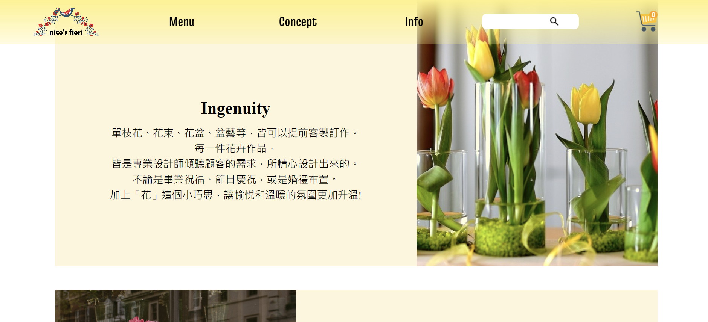
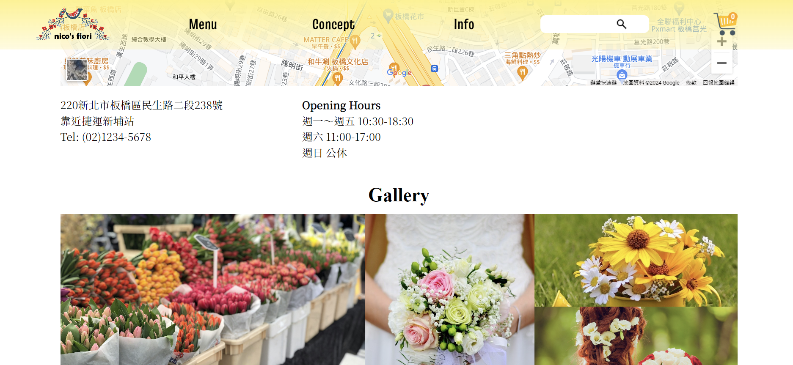
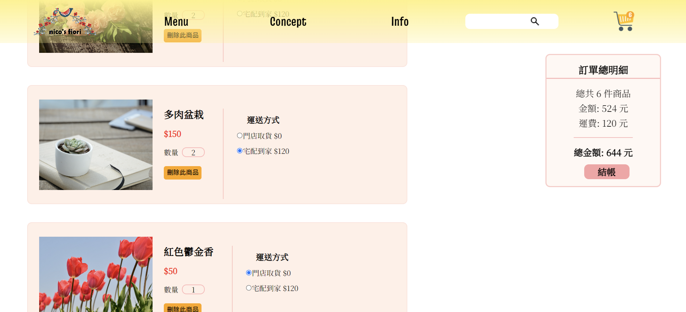
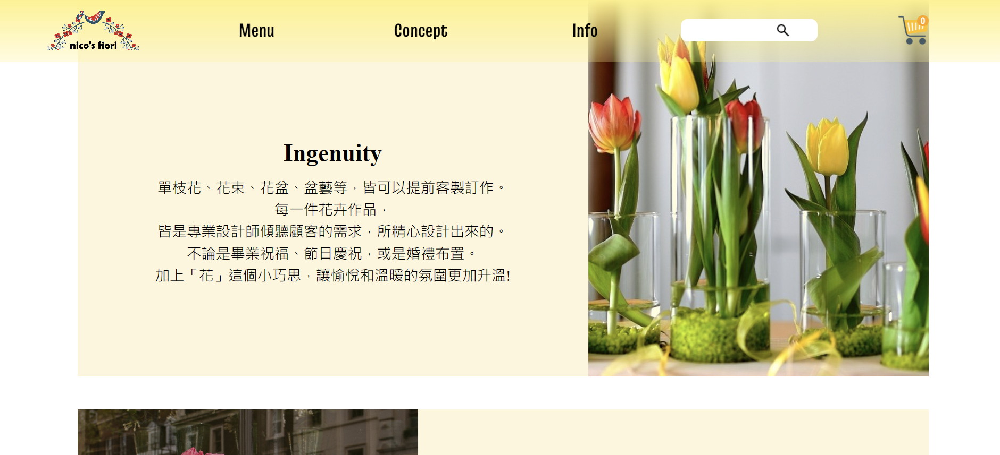
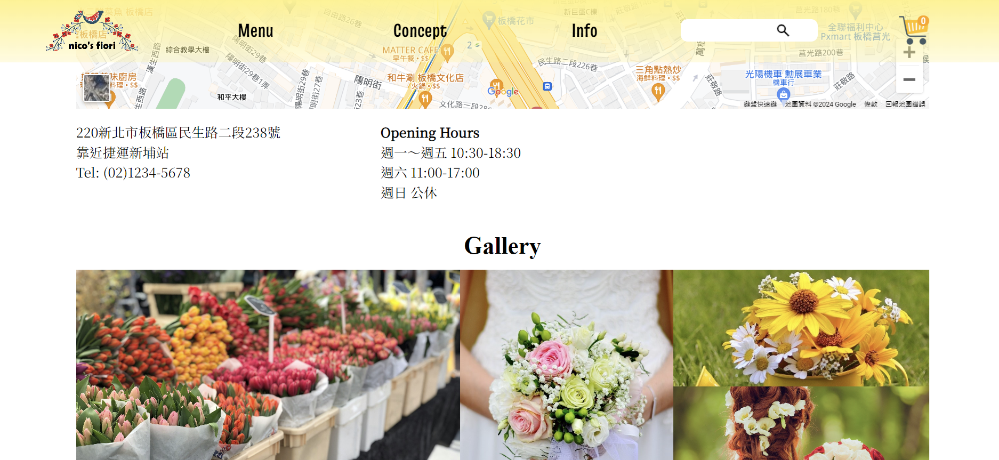
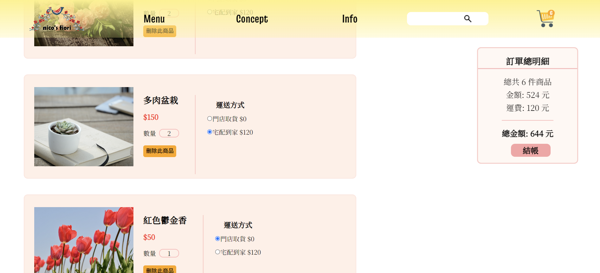

個人簡介
- 姓名: 吳育彤
- 學歷: 輔仁大學 教育領導與發展研究所
- 經歷: 國小實習老師、代課老師
多益775分
自學前端約一年左右時間 - 其他: 自傳
自傳
我是吳育彤，畢業於輔仁大學—教育領導與發展研究所。
求學期間，同時修讀了國小師資培育學分。畢業後，曾至小學擔任實習老師與代課老師。
因勤奮、盡責的特質，因此在過去曾受到多位教授的肯定，擔任教學助理。此外也獲得斐陶斐獎、實習楷模獎等。
過去曾相處過的師長、夥伴，皆肯定我善解人意、樂於助人、進退有宜。因此也曾獲得熱心助人獎。
之後，在因緣際會之下，接觸到前端領域，因此展開了一年左右的自學之旅。透過觀看網路上的教學影片、文章，翻閱書籍等方式，學習與實作HTML、CSS、RWD、Vue等前端技能。
我深知個人能力仍有進步的空間，因此持續的精進自己。
期盼未來能夠發揮所學，將所學實際運用，為公司解決問題、滿足使用者的需求。
 




